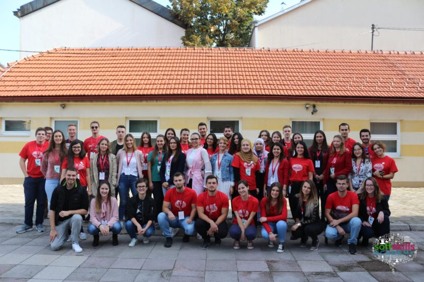

T4T
Kompanije koje su podrzale nas rad
tokom projekta T4T - Training for Trainers.

Nedavni
Projekti
Saznajte više o radu našeg udruženja,
kao i načinu na koji se naši članovi angažuju.


{kind=link}
Ovo je EESTEC
EESTEC (Electrical Engineering STudents’ European AssoCiation)
EESTEC (Electrical Engineering STudents’ European AssoCiation) je neprofitno, apolitičko udruženje studenata koje ima za cilj usavršavanje znanja i vještina studenata kroz rad i učešće u internacionalnim i lokalnim radionicama, seminarima i drugim aktivnostima udruženja, kroz koje studenti stiču ne samo tehničko znanje nego i organizacione sposobnosti. Udruženje je osnovano 1986. godine i danas se sastoji od 54 lokalna komiteta u 28 zemalja diljem Evrope i broji oko 7500 registrovanihčlanova. Više od 30 godina EESTEC je jedna od najjačih evropskih studentskih organizacija čiji je cilj unaprijediti tehnička i praktična znanja budućih profesionalaca, kao i njihove meke vještine. Lokalni komitet Tuzla je 2007. godine postao dio ove priče. Od osnivanja do danas, radili smo na organizaciji brojnih lokalnih i internacionalnih projekata, ukljucujuci seminare, radionice, razmjene i takmicenja. Ovog ljeta, upravo će Lokalni komitet Tuzla biti domaćin jednog od najvećih događaja u EESTEC – u.
Nasi
Projekti
Clanovi EESTEC LC Tuzla imaju priliku da iskuse sve cari koje nose aktivizam i volonterizam.
U toku rada na razlicitim projektima, osim stvaranja novih poznanstava, rade i na svojim intrapersonalnim vjestinaam.
-
Motivacioni vikend – Svatovac
Objavljeno 23. maja 2015.23.05.2015. godine na na planinskom izletištu Svatovac odražan je motivacijski vikend za nove članove EESTEC LC Tuzla. Na ovom edukativno – zabavnom događaju, učešće je uzelo 16 članova, a održana su dva treninga na temu “EESTEC i Timski rad” i “Event Menagement”. Članovi su pored treniga, sudjelovali u mnogobrojnim igrama za usavršavanje komunkacijskih vještina i […]
-

Motivacioni vikend – Svatovac
Objavljeno 15. maja 2016.14. i 15. maja 2016. godine na izletištu Svatovac je održan motivacioni vikend za članove EESTEC LC Tuzla. Pored dobrog druženja i zabave članovi su imali priliku učestvovati u radionicama “Team building” i “Event management”, te su na taj način uspjeli unaprijediti svoje vještine u organizovanju i prezentovanju koje su potrebne za predstojeće aktivnosti. Ovom […]
-
Soft Skills Academy
Objavljeno 31. oktobar 2016Soft Skills akademija je napokon došla i u Tuzlu! Ovaj projekat se već godinama održava širom Evrope, a naš lokalni komitet je odlučio da ga dovede i u Tuzlu. Akademija je trajala od 28. do 30. oktobra 2016. godine. Sastojala se od radionica na 5 tema : ‘Poslovna komunikacija’, ‘Liderstvo’, ‘Timski rad’, ‘Prezentacijske vještine’ i […]
-

EESTech Challenge Tuzla
Objavljeno 13. maja 2017.EESTech Challenge je takmičenje koje je prvi put održano ove godine, a planirano je da postane tradicija u EESTEC-u. To je takmičenje na nivou Evrope. U svakom gradu – učesniku se održava lokalna runda takmičenja, a potom se pobjednici lokalnih rundi sastaju i takmiče međusobno. Tema ovogodišnjeg EESTech Challenge-a je bilo “Mašinsko učenje”. Među 16 […]
-
EESTEC Hour
Objavljeno 09. juni 2017.8. juna širom Evrope slavio se EESTEC Hour. Članovi LC Tuzla su se sastali i uz gitaru, lijepo vrijeme i dobro raspoloženje obilježili ovaj dan.
-
ParTuzla – Birthday Edition
Objavljeno 06. august 2017.Ove godine naš lokalni komitet je navršio 10 godina postojanja. U čast 10. rođendana organizovali smo IMW, motivacioni vikend za 30 lokalnih i stranih učesnika. 4. augusta posjetili smo planinski dom Svatovac, gdje smo do zore uživali u dobrom raspoloženju i druženju. Nakon povratka u Tuzlu, 5. augusta, dan smo proveli na Panonskim jezerima, uz […]
-

Soft Skills Academy Tuzla
Objavljeno 18. oktobar 2017.Od 13. do 15. oktobra 2017. godine održana je druga Soft Skills akademija u Tuzli. Nakon vrlo uspješne prošlogodišnje akademije, odlučili smo uvesti tradiciju održavanja SSA u našem gradu. 40 studenata sa cijelog Univerziteta u Tuzli učestvovalo je na radionicama na teme : ‘Prezentacijske vještine’, ‘Motivacija’, ‘Upravljanje vremenom’, ‘Pregovaranje/uvjeravanje’ i ‘Govor tijela’. Radionice su držali […]
-

EESTech Challenge
Objavljeno 25. mart 2018.EESTech Challenge prvi put je održan u Tuzli 2017. godine. Tada smo, nakon velikog uspjeha pobjednika lokalne runde odlučili od ovog projekta napraviti tradiciju i dati tuzlanskim studentima priliku da se takmiče i upoznaju kolege iz brojnih gradova Evrope u kojima postoje EESTEC komiteti. Tema EESTech Challenge 2018 je bila „Big Data“, a lokalna runda […]
-
Hug an EESTECer day
Objavljeno 21. april 2018.Nastavljajući tradiciju koja nosi naziv Hug an EESTECer day, članovi EESTEC LC Tuzla su,20. aprila na Fakultetu elektrotehnike Tuzla, dijelili besplatne zagrljaje. Širimo sreću i radost gdje god se pojavimo, što je sastavni dio EESTEC-a. Ovogodišnjem Hug an EESTECer day-u su nam se pridružili i naši profesori.
-

Soft Skills Academy
Objavljeno 16. oktobar 2018.U periodu od 12.10. do 14.10.2018. godine održan je treći Soft Skills Academy Tuzla pod organizacijom Evropskog udruženja studenata elektrotehnike lokalnog komiteta Tuzla – EESTEC LC Tuzla. Učestvovalo je 40 studenata sa Univerziteta u Tuzli, koji su imali priliku da kroz besplatne radionice unaprijede sebe i potaknu razvoj neformalnih vještina neophodnih za zapošljavanje i uspješnu […]
-

NGO fair
Objavljeno 20. oktobar 2018.Omladinski resursni centar Tuzla – ORC Tuzla je 18. i 19. oktobra organizovao NGO Fair – Sajam nevladinih organizacija, u sklopu kojeg su na jednom mjestu okupili 20 udruženja i na taj način pokazali koliko su mladi u našem gradu aktivni. Naravno, svi posjetioci sajma su imali priliku upoznati se sa načinom rada svakog od […]
Kontaktirajte
EESTEC
Ukoliko nas želite kontaktirati, informisati se o udruženju i postati član našeg lokalnog komiteta, možete to učiniti tako što ćete nas posjetiti na našoj adresi ili poslati poruku na naš e-mail.
POWER YOUR FUTURE